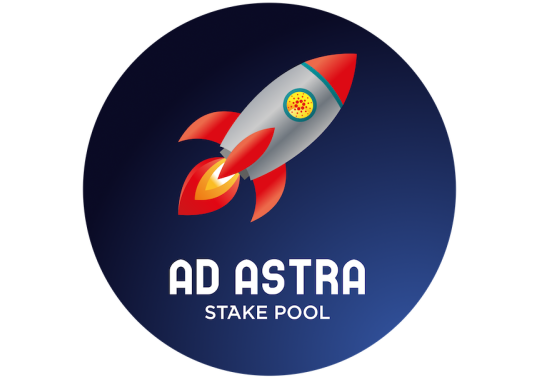
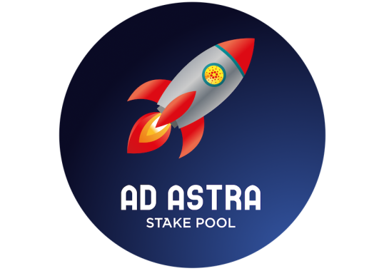

A Professional and Reliable Cardano Stake Pool


 

1900+ Blocks Minted
Proud member of the Single Pool Alliance | 1% Fee | Ticker: ASTRA


Quality Infrastructure
We use multiple enterprize-grade VPS hosting services to run 4 Cardano nodes: 1 block producing node, 2 relays, and 1 back-up block producer. Each node has 4 CPUs, 16GB of RAM, 100% SSD storage, and 99.99% server uptime. Our nodes can easily be upgraded to higher specs as the protocol demands.


Community Contributor
In our spare time, we like to create educational YouTube content highlighting positive aspects of Cardano, such as the video below.
We frequently share Cardano-related news on Twitter, while also keeping our delegators informed on pool updates in our Telegram group. If you have any questions at all, please reach out to us on Twitter or Telegram.


Single Stake Pool
A blockchain is more resiliant when run by many different actors rather than a few. As a member of the Single Pool Alliance, we pledge to only run one stake pool. We believe that Single Stake Pools are the backbone of decentralization. We would be very happy to be your Cardano stake pool of choice.
FAQs
How can I stake with your pool?
You can stake on our pool by searching for our ticker "ASTRA" on your Cardano wallet - we recommend the Eternl, Flint, or Daedalus wallet - upon finding us, you can select the option to delegate to us.
Double check that our Pool Details are:
Name: Ad Astra Stake Pool
Ticker: ASTRA
Pledge: 50k ADA
Margin: 1%
Who are you?

Hello! My name is Andrew. I'm the operator and owner of Ad Astra Stake Pool. Germany-based.My background is in filmmaking - I edited all the videos on our YouTube channel. I got involved with stake pool operating during the Shelley Testnet era (May 2020). I'm a big fan of Cardano because of their goals to help improve the developing world. Having grown up in a third-world country myself (Fiji), I can definitely see the potential of blockchain technology to help people from all walks of life.
Is staking on Cardano safe?
Yes. It is not possible for a Cardano stake pool to lose your ADA.Unlike other blockchains, staking on Cardano is non-custodial. Meaning that you do not give up custody of your ADA to a stake pool, nor do you lock your funds up in a smart contract. Your ADA will always remain in your wallet - 100% in your control.
When are rewards distributed?
Rewards are normally paid out every 5 days at the end of an epoch. However, if this is your first time delegating to any Cardano stake pool, then there is a 15 to 20-day delay from when you start delegating to when you start receiving rewards (and then it is every 5 days from then).For delegators joining us from other stake pools, there is no gap in rewards as you should continue to receive rewards from your old pool until you start receiving rewards from our pool.
How do your fees work?
Cardano Stake Pools charge two types of fees:1) The 'Fixed Fee' is a set amount of ADA.2) While the 'Variable Fee' is a percentage.Both fees are deducted from the rewards earned; never from the ADA you have staked with the pool. So if no rewards are earned for that particular epoch, then no fees are taken. Rewards are earned for minting blocks.Our pool has the minimum fixed fee of 340 ADA and a 1% variable fee. This means that 340 ADA plus 1% of the epoch rewards will be deducted and sent to the stake pool operator. The remainder is distributed to each delegator in proportion to how much ADA they have staked in the pool.
What is the ROI for staking ADA?
The average Return On Investment for staking ADA is currently about 5% per year.
Why do my epoch rewards vary?
Staking rewards vary per epoch because epoch luck varies per epoch.Cardano stake pool operators cannot control how many blocks we are allocated to mint every epoch. It is the Cardano protocol that selects which pools will mint blocks. All we can do is make sure that we are ready when needed. Sometimes we will have unlucky periods (70% luck) where we were not allocated that many blocks, and other times we will have lucky periods (130% luck) where we will be minting more than usual.In the longrun, it all averages out to 100% lifetime luck.
Can I add more ADA to be staked?
Yes. Just add more ADA to a wallet that is staking ADA. Newly added ADA is automatically staked.
Is there a lock-up period for staking ADA?
There is no lock-up period for staking on Cardano. You can transfer ADA out of your wallet at any time.
Do staking rewards diminish over time?
Yes. Well, it's complicated.Similar to how Bitcoin undergoes a "halving" where the supply of new Bitcoin is cut in half, Cardano also has a deflationary supply of new ADA. The difference is that Cardano's "halving" is gradual. Every epoch, up to 0.3% of the supply of new ADA is diminished. This means that the ROI for staking ADA will gradually decrease over time. However, Cardano is also built so that part of all transaction fees goes back to you in the form of staking rewards. So depending on scale, an increased growth of transactions on Cardano could lead to a sustained ROI for staking ADA.
Does it cost me anything to stake ADA?
There are two fees involved with staking on Cardano. One fee is the transaction fee which is typically under 0.2 ADA. The other fee is the deposit. The deposit fee is 2 ADA and is required to register your address to start staking. You can retrieve this 2 ADA deposit when you unstake from a Cardano Stake Pool.Also, depending on your Cardano wallet, it will also cost you a transaction fee to claim your rewards. I normally let my rewards accumulate and only pay the transaction fee to claim my rewards when I need to send it out of my wallet. Both claimed and unclaimed rewards are automatically staked, so your staking rewards are compounded over time.
Will you raise your Pledge?
Yes. We will raise our pledge over time.